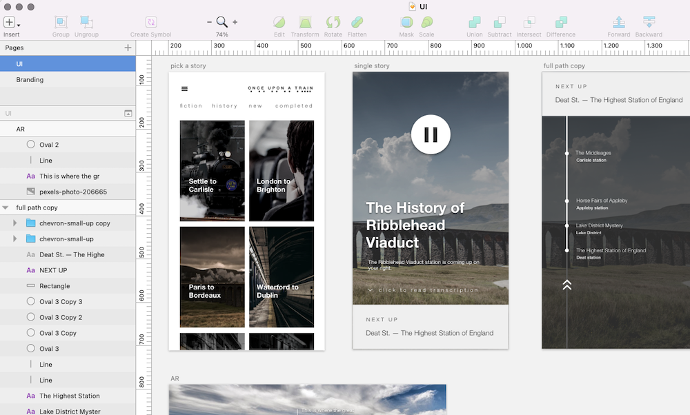

location-based audio tour app with augmented reality (AR), developed at HackTrain 4.0
| Name | Tags | Created | Size |
|---|---|---|---|
| Parent Directory | audio, location-based, AR | 2017-05-11 18:56 | 9.1MB |
Once Upon a Train is a location-based app that supplements a train journey with information and stories about the surrounding places on your train journey. It integrates clever AR features that help the immersion further.
